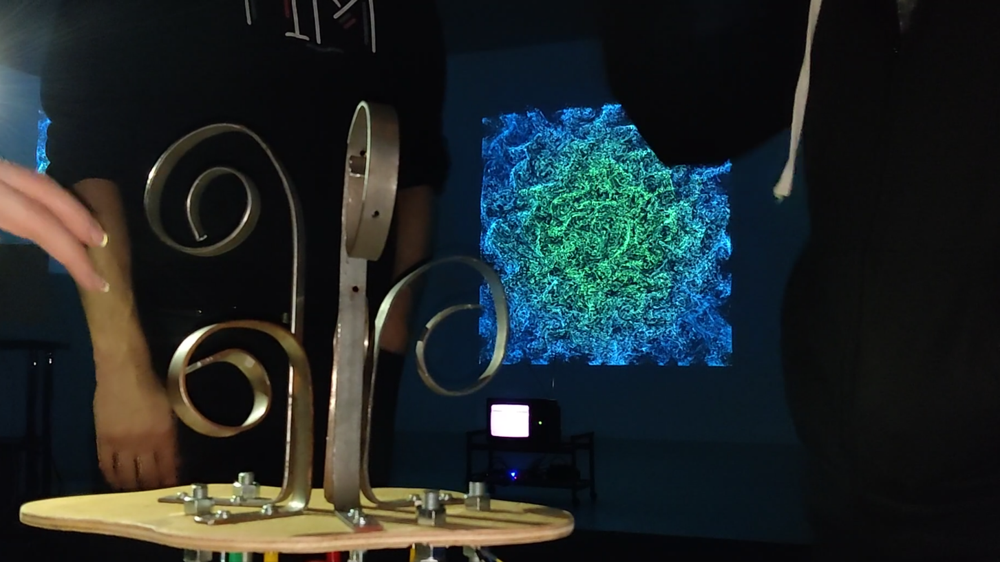
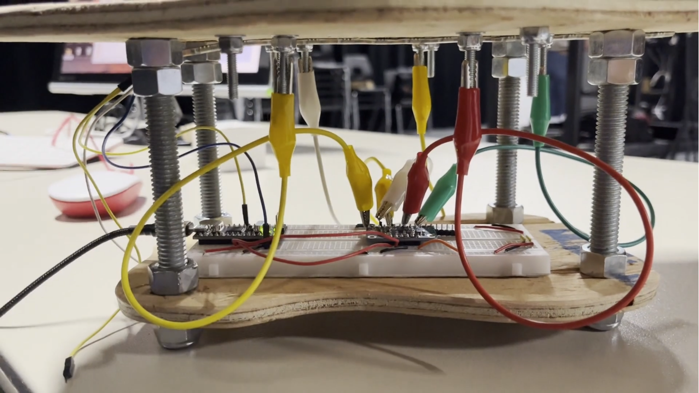
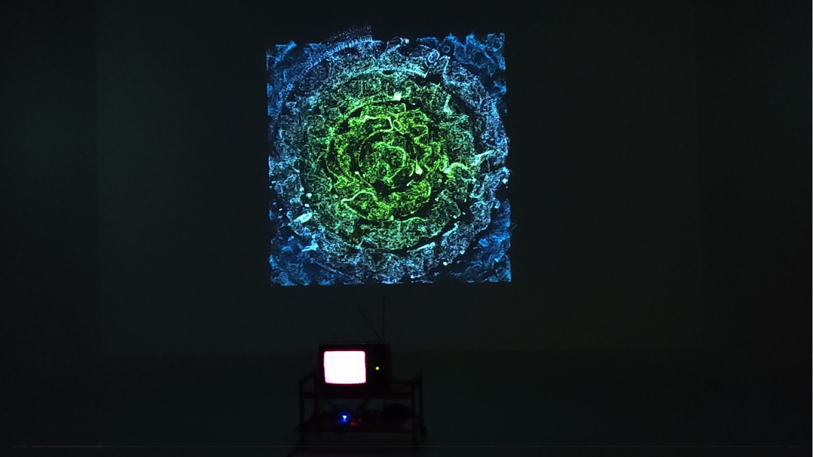

Images4 photos




Installations interactives
(21/21)
L'expérience intéractive "Anomalie" avait pour but de pousser l'utilisateur à interagir avec "L'arbre mecanique" dans le but qu'il découvre les divers changements qu'il opère dans son environnement. Les logiciels utilisé pour faire cette installation était, VCV Rack pour la création d'ambiances audio génératives et MadMapper pour la création des visuels. Pour permettre aux différents logiciels de se communiquer entre eux, l'équipe à transféré les informations envoyé à travers un signal Micro OSC UDP.
VidéoAnomalie
Images4 photos

